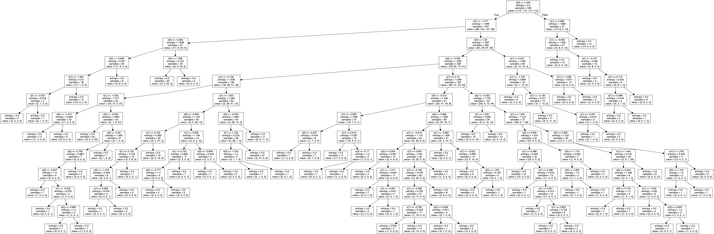

Ce TP porte sur l’étude des arbres de décision et de l’algorithme CART.
1 Classification avec les arbres
1.1 Question 1
Dans le cadre de la régression on peux utiliser la variance comme mesure d’homogénéité.Car la variance quantifie la dispersion des valeurs de la variable cible (Y) autour de leur moyenne.
Si la variance est élevée : alors les valeurs de Y sont dispersées sur une plage plus large ce qui indique une hétérogénéité élevée entre les données.
Si la variance est faible : alors les valeurs de Y sont regroupées plus étroitement autour de leur moyenne ce qui indique une homogénéité plus élevée entre les données.
1.2 Question 2
Avec scikit-learn on peut créer des arbres de décision en utilisant la classe tree DecisionTreeClassifier.
Pour la première simulation on génére un échantillon équilibré de taille \(n = 456\) avec la fonction rand_checkers. en veillant à maintenir un équilibre entre les classes.
# Tracer les données générées à partir de rand_checkersplt.figure(figsize=(8, 6))data[:, 2] +=1scatter = sns.scatterplot(x=data[:, 0], y=data[:, 1], hue=data[:, 2], palette="viridis", s=50)plt.title("rand_checkers generated datas")scatter.legend(title="Classe", bbox_to_anchor=(1.05, 1), loc='upper left')plt.grid(True)plt.show()
On partitionne ensuite en 2 sous-ensembles pour avoir un ensemble d’entrainement et un ensemble de test.
X_train = data[:, :2]Y_train = data[:, 2].astype(int)dt_entropy = tree.DecisionTreeClassifier(criterion='entropy')dt_gini = tree.DecisionTreeClassifier(criterion='gini')#calcule les performances du score sur les données d'apprentissagedt_gini.fit(X_train, Y_train)dt_entropy.fit(X_train, Y_train)train_error_gini =1- dt_gini.score(X_train, Y_train)train_error_entropy =1- dt_entropy.score(X_train, Y_train)print("L'erreur avec le critère de Gini est :", train_error_gini)print("L'erreur avec le critère d'entropie est :",train_error_entropy)
L'erreur avec le critère de Gini est : 0.0
L'erreur avec le critère d'entropie est : 0.0
Un résultat d’erreur de classification de 0 signifie que le modèle a correctement classé toutes les observations dans l’ensemble d’entraînement ce qui est excellent en termes de performance de classification.
Les erreurs des critères d’entropie et de Gini diminuent à mesure que la profondeur maximale de l’arbre augmente ce qui suggère une amélioration de la performance du modèle avec une complexité croissante.
Le choix de la profondeur optimale est crucial pour l’équilibre entre adaptation aux données et généralisation. une amélioration de la performance du modèle avec une complexité croissante.
1.3 Question 3
dt_entropy.max_depth = np.argmin(1-scores_entropy)+1plt.figure()frontiere(lambda x: dt_entropy.predict(x.reshape((1, -1))),X_train, Y_train, step=100)plt.title("Best frontier with entropy criterion")plt.draw()print("Best scores with entropy criterion: ", dt_entropy.score(X_train, Y_train))
Best scores with entropy criterion: 0.984375
Frontières pour la meilleur profondeur (entropie)
Nous allons maintenant visualiser la classification obtenue en utilisant la profondeur de l’arbre qui minimise les erreurs basées sur l’entropie. Pour ce faire, nous utiliserons la fonction frontiere() du fichier source. Il est à noter que pour une profondeur de 12, nous avons observé une absence d’erreur, ce qui signifie que le modèle a obtenu un score parfait de 1 (score = 1 - erreur). Cette classification précise met en évidence l’efficacité remarquable de l’arbre de décision dans l’apprentissage des données.
1.4 Question 4
Nous allons utiliser la fonction export_graphviz() du module tree pour générer un graphique représentant l’arbre résultant de la question précédente. Ce graphique sera sauvegardé dans le fichier ‘graphs’ .
Un arbre de décision est une structure conceptuelle relativement simple composée d’un nœud racine, suivi de deux nœuds enfants à chaque niveau. Chaque nœud non-terminal (qui n’est pas une feuille) possède également deux nœuds enfants, et cette structure se poursuit jusqu’à ce que nous atteignions les nœuds terminaux, également appelés feuilles, qui contiennent les décisions finales. Lorsque nous évaluons un point de données à travers l’arbre, si une condition au nœud k est vraie pour ce point, nous suivons la branche de gauche ; sinon, nous empruntons la branche de droite. Cette logique se répète jusqu’à ce que nous atteignions une feuille, qui détermine la décision ou la classe associée à ce point de données.
 ### Question 5
Nous allons maintenant évaluer la précision de notre arbre en calculant son taux d’erreur sur un nouvel échantillon de 160 données générées à l’aide de la fonction rand_checkers.
# Créer un nouvel échantillon de test avec 160 données (40 de chaque classe)data_test = rand_checkers(n1=40, n2=40, n3=40, n4=40)X_test = data_test[:,:2]Y_test = np.asarray(data_test[:,-1], dtype=int)dmax =30scores_entropy = np.zeros(dmax)scores_gini = np.zeros(dmax)for i inrange(dmax):# Critère : entropie dt_entropy = tree.DecisionTreeClassifier(criterion='entropy', max_depth=i+1) dt_entropy.fit(X_test,Y_test) scores_entropy[i] = dt_entropy.score(X_test, Y_test)# Critère : indice de Gini dt_gini = tree.DecisionTreeClassifier(criterion='gini', max_depth=i+1) dt_gini.fit(X_test,Y_test) scores_gini[i] = dt_gini.score(X_test,Y_test)plt.figure(figsize=(6,3.2))plt.plot(1-scores_entropy)plt.plot(1-scores_gini)plt.legend(['Entropie', 'Gini'])plt.xlabel('Profondeur maximale', fontsize=12)plt.ylabel("Taux d'erreur", fontsize=12)plt.title("Courbe d'erreur test", fontsize=15)
Text(0.5, 1.0, "Courbe d'erreur test")
Lors de cette analyse, nous avons remarqué une diminution du taux d’erreur lorsque la profondeur de l’arbre est initialement faible, suivie d’une stabilisation après avoir atteint un certain niveau de profondeur. Cette observation suggère que l’augmentation supplémentaire de la profondeur de l’arbre ne semble pas conduire à une amélioration significative du taux d’erreur.
1.5 Question 6
Nous allons reprendre ce qui a été fait précédement avec le dataset DIGITS.
Lors de l’analyse, nous avons observé que l’erreur diminue progressivement jusqu’à atteindre zéro, ce qui confirme nos premières impressions. Maintenant, notre objectif principal est d’évaluer les performances sur les données de test. En utilisant une profondeur maximale initiale, nous constatons que l’erreur diminue puis atteint un plateau. Cette stabilisation se produit à une profondeur d’environ [indiquer la profondeur]. Ainsi, pour ce jeu de données, il n’est pas nécessaire d’opter pour une profondeur très élevée de l’arbre de décision pour obtenir de meilleures performances.
1.6 Question 7
A l’aide de sklearn.cross_validation. Nous allons utiliser la fonction cross_val_score() pour évaluer les performances d’un modèle d’arbre de décision sur le jeu de données “digits”. L’objectif est d’ajuster la profondeur de l’arbre de manière variée afin de déterminer la profondeur optimale. Cette approche nous permettra de générer une série de scores pour différentes profondeurs et de choisir celle qui offre les meilleures performances.
np.random.seed(12)error_ent = []error_gini = []dmax =12X = digits.datay = digits.targetfor i inrange(dmax): dt_entropy = tree.DecisionTreeClassifier(criterion='entropy', max_depth=i +1) accuracy = cross_val_score(dt_entropy, X, y, cv=10) error_ent.append(1-accuracy.mean()) dt_gini = tree.DecisionTreeClassifier(criterion='gini', max_depth=i +1) accuracy2 = cross_val_score(dt_gini, X, y, cv=10) error_gini.append(1-accuracy2.mean())plt.figure(figsize=(7, 4))plt.plot(error_ent, label="entropy")plt.plot(error_gini, label="gini")plt.xlabel('Depth')plt.ylabel("Error")plt.legend()plt.title("L'erreur avec les critères Gini et Entropy")plt.show()print(error_ent)print(error_gini)best_depth = np.argmin(error_ent) +1print(best_depth)
La meilleure valeur pour la profondeur est \(8\) pour cette graine là.
1.7 Question 8
dans cette quetsion, nous allons générer des courbes d’apprentissage en modifiant la taille de l’ensemble d’entraînement. Ces courbes nous permettront d’obtenir des scores pour différentes tailles d’ensembles. De plus, nous allons incorporer les “intervalles de confiance” pour représenter la variation des scores obtenus lors de la validation croisée.
dt = tree.DecisionTreeClassifier(criterion='entropy')n_samples, train_scores, test_scores = learning_curve(dt, X_train, Y_train, cv=5)train_scores_mean = np.mean(train_scores, axis=1)train_scores_std = np.std(train_scores, axis=1)test_scores_mean = np.mean(test_scores, axis=1)test_scores_std = np.std(test_scores, axis=1)# Tracer la courbe d'apprentissage avec un style personnaliséplt.figure()plt.grid()plt.fill_between(n_samples, train_scores_mean -1.96* train_scores_std, train_scores_mean +1.96* train_scores_std, alpha=0.2, color='blue', label="Train (±1.96 STD)")plt.fill_between(n_samples, test_scores_mean -1.96* test_scores_std, test_scores_mean +1.96* test_scores_std, alpha=0.2, color='orange', label="Test (±1.96 STD)")plt.plot(n_samples, train_scores_mean, 'o-', color='blue', label="Score d'entraînement")plt.plot(n_samples, test_scores_mean, 'o-', color='orange', label="Score de validation croisée")plt.legend(loc="lower right")plt.xlabel("Taille de l'échantillon d'entraînement")plt.ylabel("Accuracy")plt.title("Courbe d'apprentissage pour le meilleur arbre de décision")plt.show()